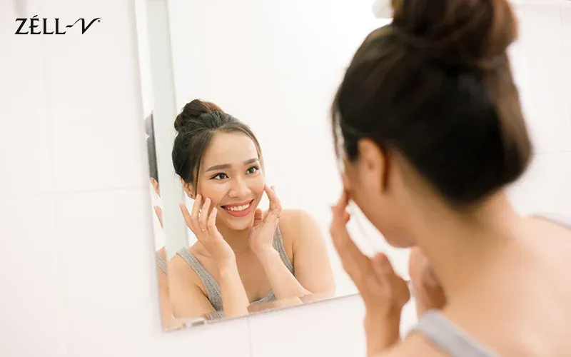

Sheep placenta is a source of concentrated nutrients and bioactive compounds, which have been shown to have numerous health benefits. While it may be newer to the field of health supplements, it has long been known that the placenta is a source of powerful stem cells, which can be used to promote cell renewal, slow down visual signs of ageing, and improve overall health.
To take advantage of the many positives offered by this remarkable product, supplements like our ZÉLL-V Platinum Plus Sheep Placenta are formulated with sheep placenta extract and enhanced to maximise absorption in the body. To help you learn more, we’ve listed the three main benefits of sheep placenta extract and why you should consider adding it to your diet.

1) Healthier And More Beautiful Skin
Sheep placenta extract products have nutrients such as proteins, lipids, and vitamins. Some of these naturally occur in your body, although they can decline as you age. Collagen levels declining with age is the main cause of concerns, such as the sagging of the skin, wrinkles, fine lines and dryness.
One way to counteract these effects is to supplement your diet with sheep placenta supplements so that your skin remains smooth and plump, looking like that of a young, vibrant person. The placenta of sheep prompts the manufacture of collagen to assist in maintaining the structural integrity of the skin and makes it firm and supple. It aids in cutting down on redness and inflammation, and thus it is useful in cases of sensitive or acne-prone skin. Sheep placenta provides you with a healthy glow and improves beauty and self-esteem.
2) Promote Regeneration and Revitalisation of Body Tissue
The regenerative potential of tissues in our body declines with age. Our systems are less able to maintain healthy tissue and repair damaged tissue. One of the secrets to combating the evident signs of ageing is to increase regeneration and revitalisation of internal body tissue, and, through regular usage of sheep placenta, substantial assistance can be found.
The stem cells and many growth factors in the sheep placenta promote the growth of cells and repair of cells, as well as assist in the process of recovery through repairing the damaged tissue and the growth of new tissues; skin, muscle, and even bone.
Our bodies incur a lot of wear and tear in the course of the day, and as our age advances, more help is required to keep up past levels of performance. One of the advantages of the sheep placenta may include stamina and energy level, especially for an athlete or another active individual in general. Our sheep placenta supplement can also improve blood circulation and improve sleep patterns so that you can remain in top shape.
Experience the Power of ZÉLL-V Sheep Placenta Supplement →3) Better Physical and Mental Health
Although you may not be an athlete, sheep placenta can be a valuable supplement to support overall health and well-being. These amazing health boosters may enhance energy, alertness and mental sharpness as well as maintenance of healthy and flexible joints. The sheep placenta is also commonly used to support women during perimenopause, helping the body adapt to hormonal change and maintain vitality. Beyond this, it can be beneficial for post-partum women, providing cellular and nutritional support to help restore energy, support recovery after childbirth, and promote overall well-being. Some mothers also noticed that it may help support lactation, complementing a healthy diet and lifestyle.
On the whole, sheep placenta extract is an effective supplement that can give numerous benefits to the body and brain. Safe and effective, it is most certainly worth considering introducing it to your diet routine to remain as youthful and to provide your body with the tools required in its effort to stay young.
Being one of the most well-recognised brands of cellular therapy, ZÉLL-V is very proud of its science-driven stance to healthcare and wellness. Go ahead and contact us today to know more about our products, and in case you have any questions.
This article is for general information only and is not a substitute for professional medical advice. Please consult your doctor before starting any supplement, especially if you are pregnant, nursing, taking medication or have a medical condition.